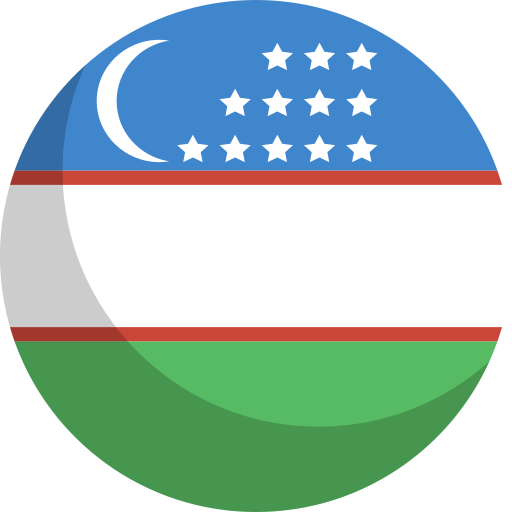
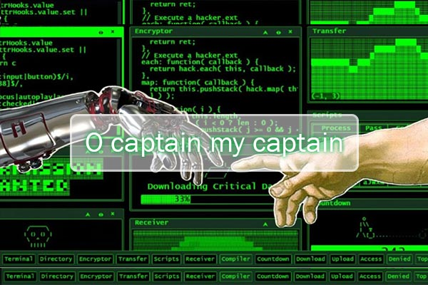

Yuklanmoqda...
🌤
--°
Toshkent
--°
Yuklanmoqda...
📍 Toshkent, O'zbekiston
🌤
🌡 His qilinadigan
--°C
💧 Namlik
--%
💨 Shamol
-- km/h
🔵 Bosim
-- hPa
👁 Ko'rinish
-- km
☀️ UV indeks
--
Minimum
--°C
Maximum
--°C

O'zbek
∧
📶
🔊
🔋
⚡
00:00
00.00.0000
Toshkent vaqti
Ijtimoiy tarmoqlar
Telegram
https://...
Biography.txt
✕
+
←
→
↑
↺
PENTESTER
›
xondamir
›
Web_CV
›
Biography.txt
Search Biography

📷 Rasm: bio-photo.jpg faylini papkaga qo'ying
Xondamir
$ Social engineer · Gray hat hacker · Red team
Salom. Men uchun kiberxavfsizlik oddiy kasb emas — bu tartibsizlik ichidan haqiqatni izlash jarayoni. Har bir terminal oynasi, har bir satr kod va har bir zaiflik ortida inson tafakkuri, tizimlar mantig'i va nazoratning asl tabiati yashiringan deb hisoblayman.
Asosiy yo'nalishim penetration testing va offensive security bo'lsa-da, qiziqishlarim faqat texnologiya bilan cheklanmaydi. Men falsafa, inqiloblar tarixi, adolat tushunchasi va insoniyatning "hayot aslida nima?" degan tugamaydigan savollari ustida ham muntazam izlanaman. Chunki menimcha, haqiqiy xaker faqat tizimlarni emas, dunyoni ham tahlil qila olishi kerak.
Tunlar davomida loglar va paketlar orasida o'tirib, ba'zan eng katta savollar ustida bosh qotiraman: erkinlik nima, haqiqat qayerda boshlanadi, insonni inson qiladigan narsa nima? Kiber olamdagi kurash ham ko'pincha shu savollarning boshqa shaklidir.
Men mukammallikka emas, rivojlanishga intilaman. Har bir xato — yangi bilim, har bir muvaffaqiyatsizlik esa keyingi bosqich uchun xarita. Bu yo'lni tanlaganimga afsuslanmaganman. Va ehtimol, umr bo'yi ham shu qorong'i, ammo cheksiz qiziq olamni o'rganishda davom etaman.
Xondamir
$ Social engineer · Gray hat hacker · Red team
Hello. To me, cybersecurity is far more than a profession—it is the pursuit of truth within chaos. I believe that behind every terminal window, every line of code, and every vulnerability lies a reflection of human thought, the logic of systems, and the true nature of control.
Although my primary focus is penetration testing and offensive security, my interests extend far beyond technology alone. I am equally drawn to philosophy, the history of revolutions, the concept of justice, and humanity's endless search for answers to the question: "What is life, really?" Because in my view, a true hacker should be capable of analyzing not only systems, but the world itself.
Through countless nights spent among logs and network packets, I often find myself contemplating questions far greater than technology: What is freedom? Where does truth begin? What is it that makes a human being truly human? In many ways, the struggles of the cyber world are merely another expression of these same timeless questions.
I do not strive for perfection—I strive for growth. Every mistake is a lesson waiting to be understood, and every failure is a map leading toward the next stage of the journey. I have never regretted choosing this path. And perhaps I will spend my entire life exploring this dark, yet endlessly fascinating world, forever searching for what lies beneath the surface.
Xondamir
$ Social engineer · Gray hat hacker · Red team
Hallo. Für mich ist Cybersicherheit weit mehr als nur ein Beruf – sie ist die Suche nach Wahrheit inmitten des Chaos. Ich bin überzeugt, dass sich hinter jedem Terminalfenster, jeder Zeile Code und jeder Schwachstelle menschliches Denken, die Logik von Systemen und das wahre Wesen von Kontrolle verbergen.
Obwohl mein Schwerpunkt auf Penetration Testing und Offensive Security liegt, reichen meine Interessen weit über die Technologie hinaus. Ich beschäftige mich ebenso intensiv mit Philosophie, der Geschichte von Revolutionen, dem Begriff der Gerechtigkeit und den endlosen Fragen der Menschheit: "Was ist das Leben in seinem tiefsten Wesen?" Denn ich glaube, dass ein wahrer Hacker nicht nur Systeme analysieren kann, sondern auch die Welt selbst verstehen und hinterfragen muss.
In langen Nächten zwischen Logs und Datenpaketen denke ich oft über die größten Fragen überhaupt nach: Was ist Freiheit? Wo beginnt die Wahrheit? Was macht einen Menschen wirklich menschlich? Der Kampf in der digitalen Welt ist oft nichts anderes als eine andere Erscheinungsform derselben zeitlosen Fragen.
Ich strebe nicht nach Perfektion, sondern nach Entwicklung. Jeder Fehler ist eine neue Erkenntnis, jede Niederlage eine Karte für den nächsten Abschnitt des Weges. Ich habe es nie bereut, diesen Pfad gewählt zu haben. Und vielleicht werde ich mein ganzes Leben damit verbringen, diese dunkle und zugleich unendlich faszinierende Welt zu erforschen – immer auf der Suche nach dem, was unter der Oberfläche verborgen liegt.
Xondamir
$ Social engineer · Gray hat hacker · Red team
Bonjour. Pour moi, la cybersécurité est bien plus qu'un simple métier : c'est une quête de vérité au cœur du chaos. Je suis convaincu que derrière chaque terminal, chaque ligne de code et chaque vulnérabilité se cachent la pensée humaine, la logique des systèmes et la véritable nature du contrôle.
Bien que mon domaine principal soit le penetration testing et l'offensive security, mes centres d'intérêt dépassent largement le cadre de la technologie. Je m'intéresse également à la philosophie, à l'histoire des révolutions, à la notion de justice et aux interrogations infinies de l'humanité autour de cette question intemporelle : "Qu'est-ce que la vie, au fond ?" Car à mes yeux, un véritable hacker ne devrait pas seulement être capable d'analyser des systèmes, mais aussi de comprendre et d'interroger le monde lui-même.
Au fil des nuits passées parmi les journaux système et les paquets réseau, je me retrouve souvent à méditer sur les plus grandes questions qui soient : Qu'est-ce que la liberté ? Où commence la vérité ? Qu'est-ce qui fait qu'un être humain est véritablement humain ? Les luttes du cyberespace ne sont, bien souvent, qu'une autre manifestation de ces mêmes interrogations fondamentales.
Je ne poursuis pas la perfection ; je poursuis l'évolution. Chaque erreur est une nouvelle leçon, chaque échec une carte indiquant la prochaine étape du voyage. Je n'ai jamais regretté d'avoir choisi cette voie. Et peut-être passerai-je toute ma vie à explorer cet univers sombre, mais infiniment fascinant, poursuivant sans relâche ce qui se cache au-delà des apparences.
Xondamir
$ Social engineer · Gray hat hacker · Red team
Hola. Para mí, la ciberseguridad es mucho más que una profesión; es la búsqueda de la verdad en medio del caos. Creo que detrás de cada terminal, cada línea de código y cada vulnerabilidad se esconden el pensamiento humano, la lógica de los sistemas y la verdadera naturaleza del control.
Aunque mi principal campo de especialización es el penetration testing y la offensive security, mis intereses van mucho más allá de la tecnología. También dedico gran parte de mi tiempo a la filosofía, a la historia de las revoluciones, al concepto de justicia y a las interminables preguntas que la humanidad se ha formulado desde siempre: "¿Qué es realmente la vida?" Porque, en mi opinión, un verdadero hacker no debería limitarse a comprender sistemas; también debería ser capaz de analizar y cuestionar el mundo que los rodea.
Durante largas noches entre registros, paquetes y flujos de datos, a menudo me encuentro reflexionando sobre cuestiones mucho más profundas: ¿Qué es la libertad? ¿Dónde comienza la verdad? ¿Qué es aquello que hace humano al ser humano? En muchos sentidos, las luchas del ciberespacio no son más que otra expresión de estas mismas preguntas eternas.
No persigo la perfección; persigo el crecimiento. Cada error es una nueva enseñanza, y cada fracaso es un mapa que señala el siguiente paso del camino. Nunca me he arrepentido de haber elegido esta senda. Y quizás pase toda mi vida explorando este mundo oscuro, pero infinitamente fascinante, en una búsqueda constante de aquello que permanece oculto bajo la superficie.
Xondamir
$ Social engineer · Gray hat hacker · Red team
Ciao. Per me la cybersicurezza non è semplicemente una professione: è una ricerca della verità nel cuore del caos. Credo che dietro ogni finestra di terminale, ogni riga di codice e ogni vulnerabilità si nascondano il pensiero umano, la logica dei sistemi e la vera natura del controllo.
Sebbene il mio campo principale sia il penetration testing e l'offensive security, i miei interessi non si limitano alla tecnologia. Mi dedico con la stessa passione alla filosofia, alla storia delle rivoluzioni, al concetto di giustizia e alle domande senza fine che accompagnano l'umanità da sempre: "Che cos'è davvero la vita?" Perché, a mio avviso, un vero hacker non dovrebbe limitarsi ad analizzare i sistemi; dovrebbe essere in grado di comprendere e interrogare anche il mondo stesso.
Nelle lunghe notti trascorse tra log, pacchetti e flussi di dati, mi ritrovo spesso a riflettere sulle domande più grandi di tutte: Che cos'è la libertà? Dove ha inizio la verità? Che cosa rende un essere umano veramente umano? La lotta nel mondo digitale è spesso soltanto un'altra manifestazione di questi stessi interrogativi senza tempo.
Non inseguo la perfezione; inseguo la crescita. Ogni errore è una nuova conoscenza, ogni fallimento una mappa che indica la tappa successiva del viaggio. Non mi sono mai pentito di aver scelto questa strada. E forse trascorrerò l'intera vita esplorando questo universo oscuro ma infinitamente affascinante, continuando a cercare ciò che si cela oltre la superficie delle cose.
0 items
|
Biography.txt